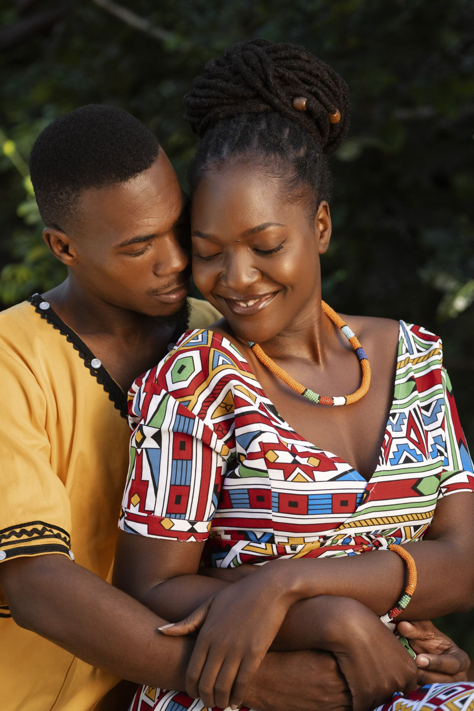
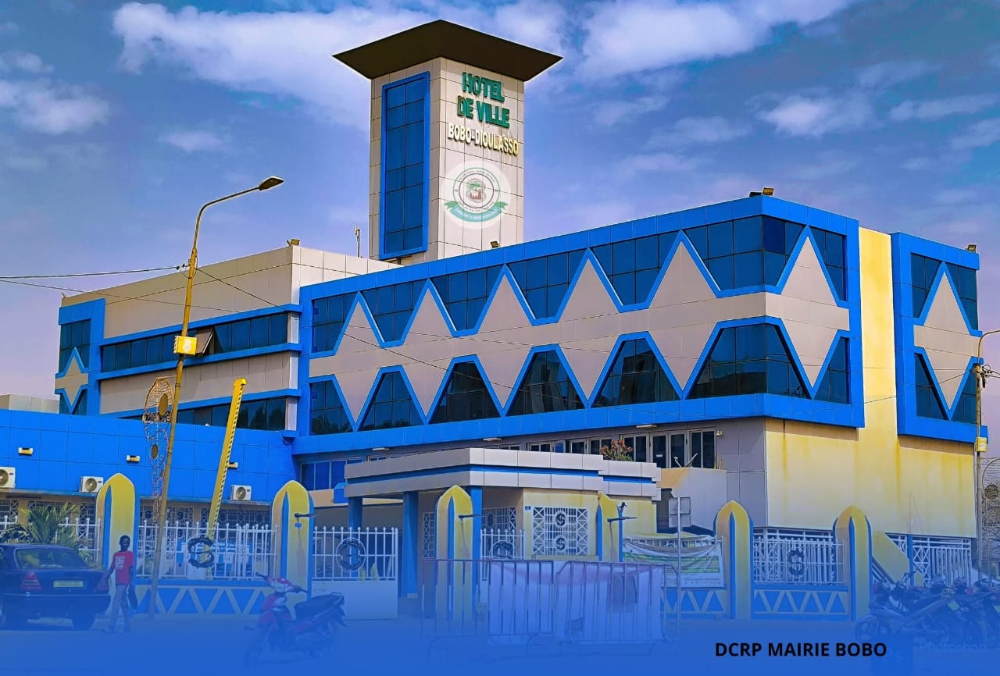
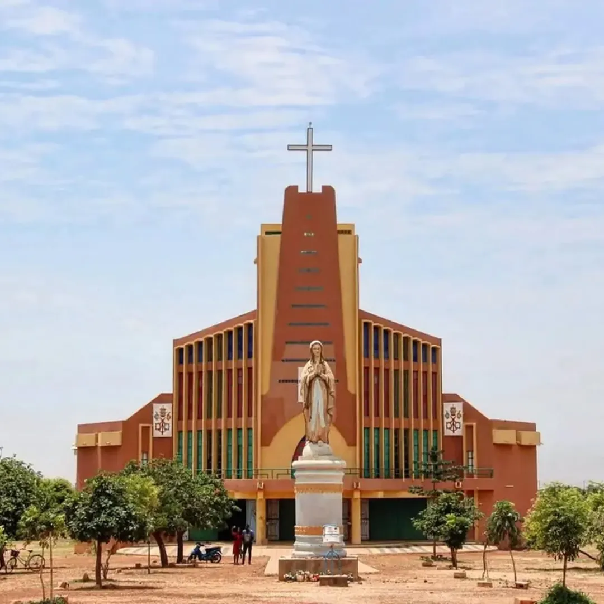

Nous nous marions !
Les Familles
BONKOUNGOU
&
NASSA
ont le plaisir de vous inviter à la célébration de mariage de leurs enfants
YVES & YVETTE
Enregistrez la date
Nous avons hâte de vous voir !
JUIN 2026
LMMJVSD
1234567
891011121314
15 16 17181920212223
24252627282930
Mariage Civil
VENDREDI 12 JUIN 2026
🕒 14h30

📍 Localisation Mairie
Mariage Religieux
SAMEDI 13 JUIN 2026
🕒 10h30

📍 Localisation Église
La Réception
Salle des banquets, Ouaga 2000
🕒 À partir de 16h00

Liste de Cadeaux de Mariage
Confirmation
J-Moins...
--
Avant le plus beau jour !